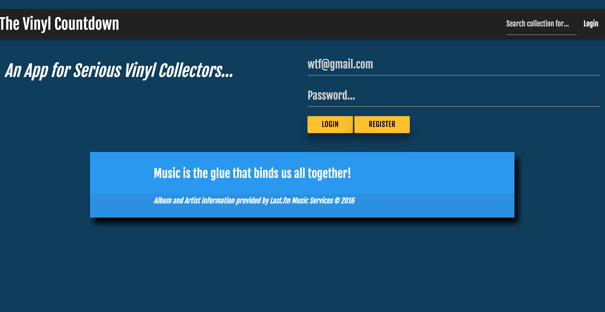
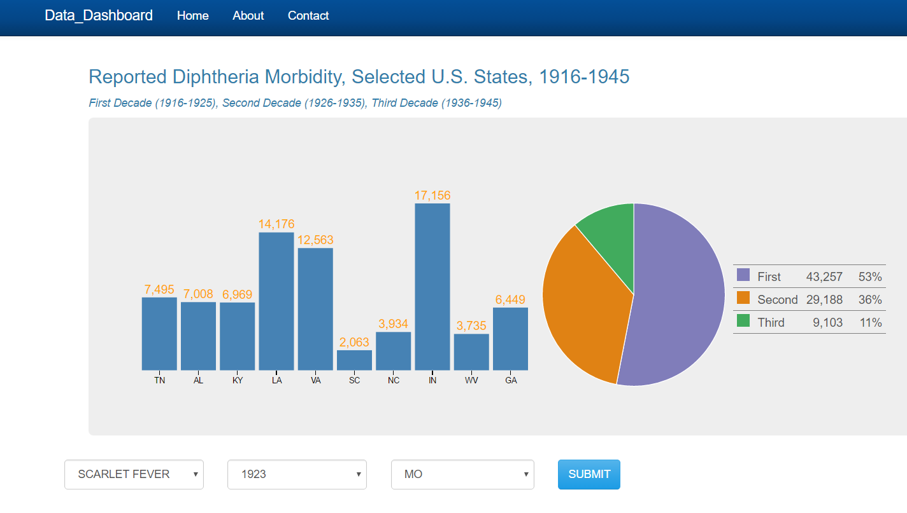
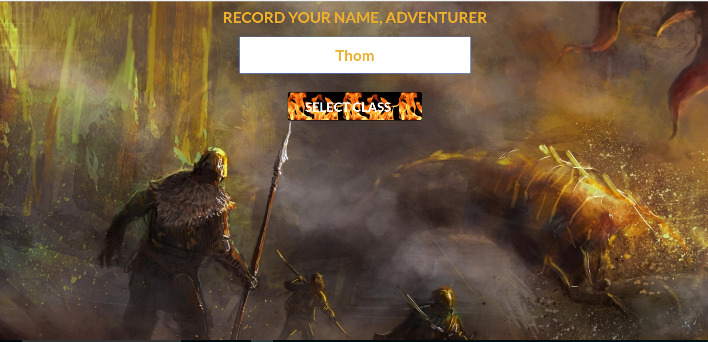

I'm a veteran of the US Army, a former health care epidemiologist, and a graduate of the Nashville Software School's immersive 6 month, full-time boot camp, where I studied Javascript and C#/.NET development, among other topics. I have 10+ years of experience in data analysis, project management, and business analysis, and my goal is to work in a mentally stimulating, problem-solving environment, where my experience and skills may be of benefit to an organization, and I feel like I am making the world a better place.
Nashville Software School
Nashville, Tennessee, USA
East Tennessee State University
Johnson City, Tennessee, USA
University of Tennessee
Knoxville, Tennessee, USA
Nicholls State University
Thibodaux, Louisiana, USA
Nicholls State University
Thibodaux, Louisiana, USA
Associated Packaging, Inc.
Nashville Software School
Global Evaluation & Applied Research Solutions, Inc
My involvement with these health departments involves serving as the primary technical assistance resource related to HIV Surveillance processes, demonstrating analytical techniques to utilize person-searching software database collections to identify migration trends among HIV-infected clients, and the practical application of similar principles learned from my experiences in projects I developed and managed in while serving as the Epidemiology and Surveillance Director with the State of Tennessee Health Department's HIV/STD Program.
Tennessee Department of Health
Throughout my career, I served as the Primary Product Owner for the implementation of the following large-scale software implementation projects within the HIV/STD Program:
(1) STD*MIS, (2) eHARS, (3) PRISM, (4) Ryan White Eligibility System, (5) CareWare
In this role over a period of 10 years, I worked closely with teams of Programmers, Project Managers, and Business Analysts to design, develop, and implement large-scale software applications that are used by public health staff throughout Tennessee.
I have extensive program operations management experience, serving as the principal investigator and primary author on three large, multi-year HIV surveillance cooperative agreements through the Centers for Disease Control and Prevention (CDC). I completed regular process reports to notify federal government project officers on progress made, took corrective action for any deficiencies identified, and created/managed all associated budgets.
Centers for Disease Control and Prevention
In my role on the RRT, I analyzed all potential data sources obtained from worker activity reports and laboratory surveillance reports from STD/MIS (and other locally-controlled databases) to determine if program metrics derived from the CDC STD cooperative agreement (CSPS), were being achieved. Additional data reports that I produced for decision-making purposes included analyses of local syphilis cases, along with epidemiological descriptions of the distribution of diseases among specific sub-populations, open case line listings for the current working month and two months prior, cases with adverse disposition for field investigations, mobile screening activities, and reports identiiying clustering opportunities are initiated where appropriate, and reports describing re-interviews and cluster interviews.
Louisiana Office of Public Health
In this role, I also conducted follow-up and referrals to ensure examination and treatment compliance for infected, exposed and at-risk individuals for HIV/STDs. I interviewed and counseled clients who are at risk for or have communicable and/or chronic diseases and elicit the name of contacts and detailed information about the client's personal behavior, and maintained the confidentiality of all records data and information as required by section, department or state regulation.
I also conducted HIV pre- and post-testing counseling and make referrals to health care providers as appropriate, performed phlebotomy for blood testing, and provided information to the public, educators and health care professionals about communicable and chronic diseases. Additionally, I educated clients about health risks and promote behavioral changes to reduce risks.
US Army
In this role, responsible for directing and managing the administrative and training duties for 30+ soldiers who worked within the medical-surgical unit of this hospital, as well as approximately $10 million worth of surgical equipment used during operational deployments.
During combat operations, I managed work schedules to ensure that surgical suites were adequately staffed, operating rooms were prepared for surgery, ensured all necessary supplies and surgical tools are sterile and ready, maintained control and placement of all items used during surgery. Additionally, I provided other assistance as needed, during the operation to include delivering the patient to recovery, and cleaning up the operating room after surgery.
Nicholls State University Chapter

The Vinyl Countdown

Health Care Data Dashboard

Gauntlet
thomshavor@gmail.com
1200 North 14th Street
Nashville, TN 37206
1-615-788-9047
Created by Thom Shavor